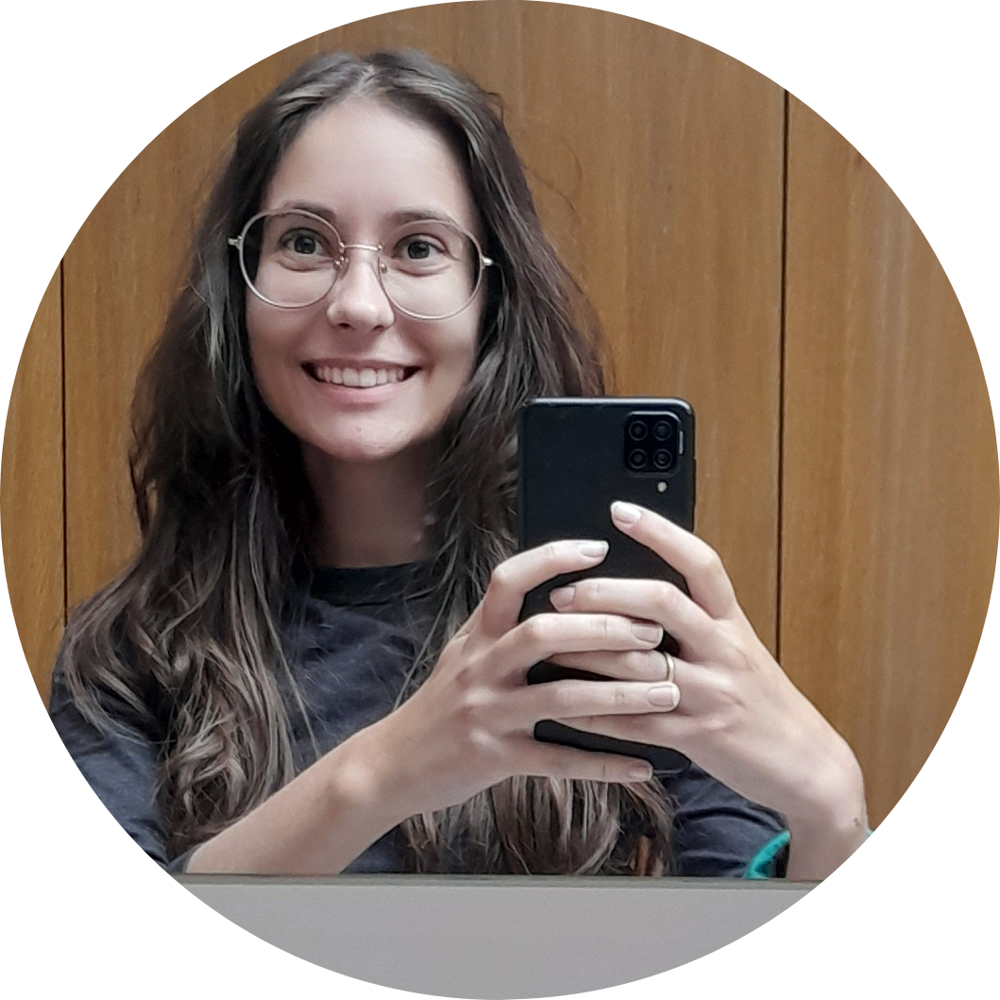

Sobre

Oii! Me chamo Julia Meireles, tenho 20 anos e sou estudante no curso de Engenharia da Computação no Centro Federal de Educação de Minas Gerais (CEFET-MG).
Meu objetivo é conhecer cada vez mais os pormenores das modernidades que nos circundam, a fim de um dia ser capaz de formar um equilíbrio entre o grande conteúdo teórico de diversas áreas (tecnologia, matemática, biologia, física, etc) e as minhas ideias, a fim de revolucionar, quem sabe, o futuro do mundo.
Projetos e Interesses
Em relação aos projetos, já participei de vários na faculdade: empresa júnior, grupo PET, grupo de competição iniciação científica, etc. Mas ainda tenho alguns desejos a adicionar a essa lista, entre eles: professora voluntária para alunos carentes, mais iniciações científicas que envolvam temas do meu espectro de interesse (eletrônica, computação quântica, dados, design, desenvolvimento de softwares... sim, é bem amplo, pode ser praticamente qualquer coisa, menos marketing), intercâmbios, alguma equipe de competição (talvez), entre outras coisas.
Já em relação aos interesses, eu amo bichinhos. Tenho dois gatinhos, a Mel e a Cacau. Espero que um dia eu possa ter um jardim bem grande com gatinhos, cachorros, galinhas, coelhos, alguns cavalos e quem sabe até uma vaca! Seria incrível.